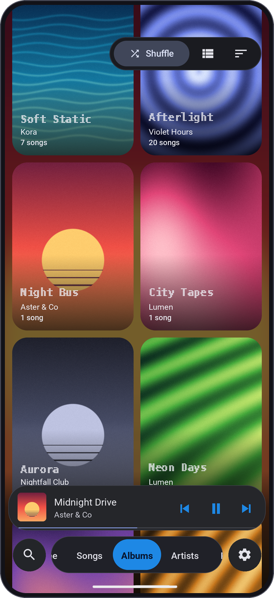
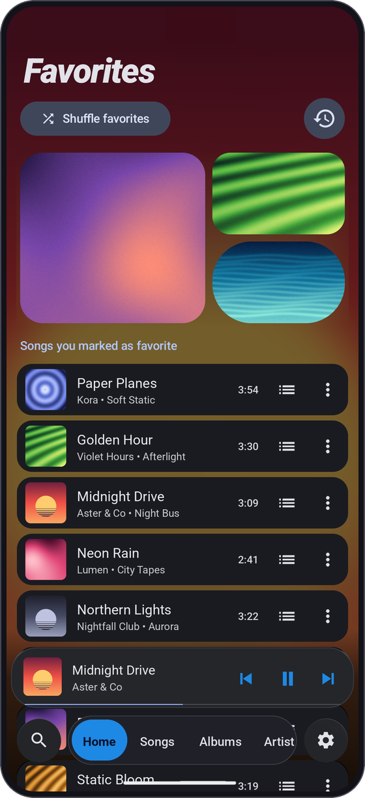
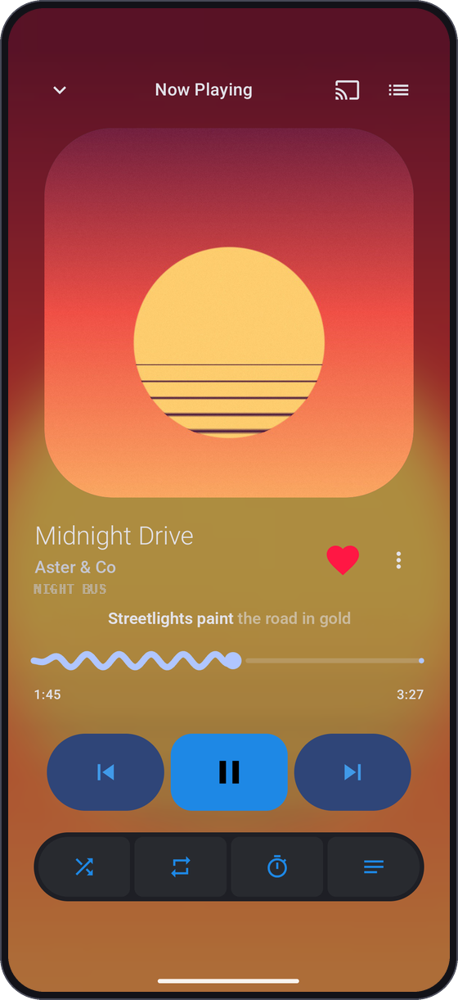
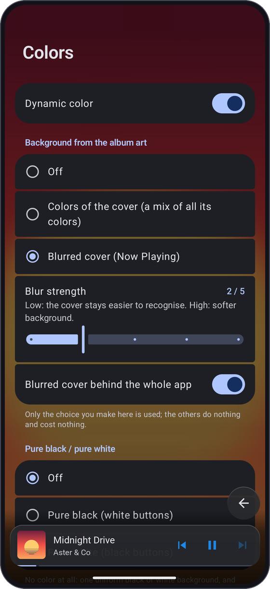
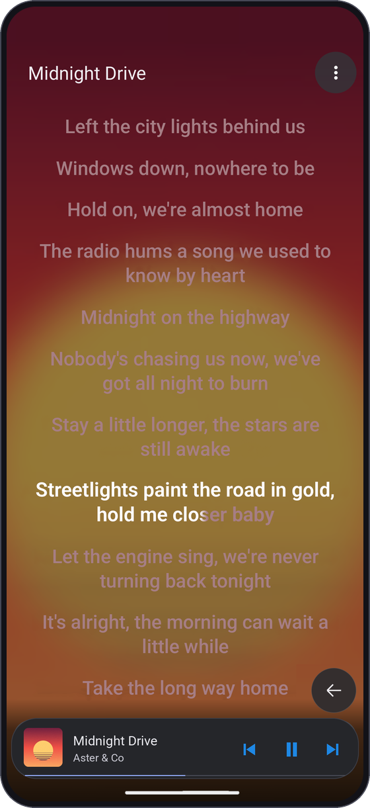
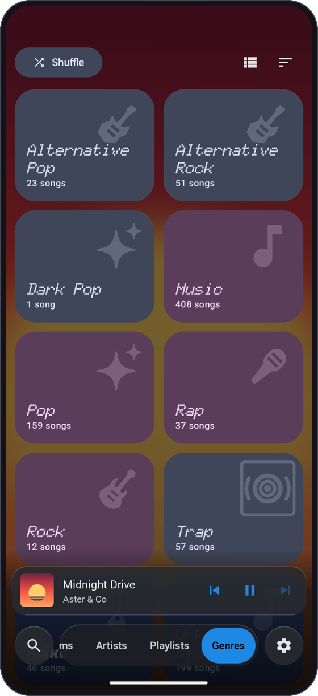
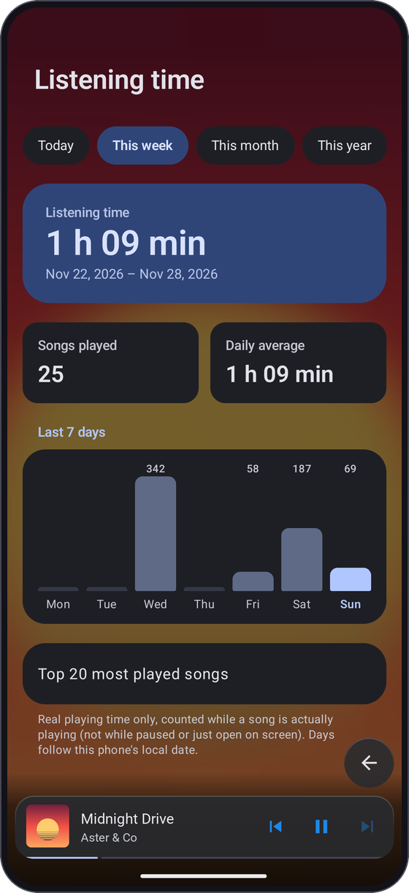

Buttons that follow your finger
Shuffle and History slide closer as you scroll and a pill fades in around them. Scroll back and it reverses.

LocalPlayer plays the files you already own. No account, no ads, no analytics.


The cover colors the whole app. Your files stay the source of truth: MP3, FLAC, M4A and AAC.
Shuffle and History slide closer as you scroll and a pill fades in around them. Scroll back and it reverses.

Pick a blur strength from 1 to 5 and put it behind the whole app, not only Now Playing.

Plain or LRC, with an editor. The sung line fills with color and you can shift every time at once.

Genres get their own artwork from the tag, in English or Greek. Statistics show listening time, songs played and a daily average for the last 7 days.


Navigation, the mini player and Shuffle favorites sit at the bottom of the screen, where your thumb already is.
Edit one song or many at once, open a Details page, change or remove covers.
Find ReplayGain for a song, an album or the whole library (MP3 and FLAC). Sleep timer with “End of the queue”.
Paste a public playlist link, see what you already have, build a playlist, then look for the rest on YouTube. No Spotify login.
yt-dlp and FFmpeg inside the app, with your folder, genre and tag settings.
Import by parts, optional weekly backup to a folder you choose, crash reports saved only on the phone.
Widgets, duplicate finder, .m3u import and export, and re-linking a moved folder without losing favourites.
Go to the latest release page on GitHub.
Save the .apk file to your phone.
Open the file and allow “Install unknown apps” for your browser or file manager if asked.
Launch LocalPlayer and pick the folders with your music.
There is no account, no ads and no analytics. Crash reports are optional, off by default and saved only on your phone. There is no Spotify login in the app.
No. Everything works offline. The network is used only for lyrics search, the update check and downloads you start yourself.
MP3, FLAC, M4A and AAC files from the folders you choose. The audio file stays the source of truth.
Android phones with an ARM64 processor (arm64-v8a). YouTube downloads work only on those devices. There is no iPhone version.
No. “Playlist from Spotify” only reads the link of a public playlist made by a user. Playlists made by Spotify itself (Daylist, Mix for you) and private playlists cannot be read.
The app checks GitHub once every 24 hours and tells you when a new version is out. Download the new APK from the release page and install it over the old one. The check can be turned off.
Open an issue on GitHub: github.com/prodypro-mi2009/LocalPlayer/issues